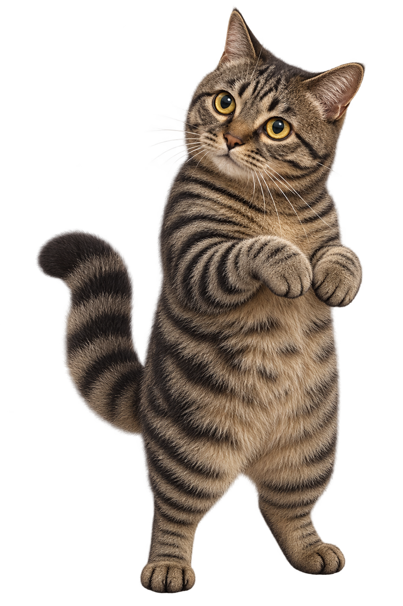

BULI'S LITTLE BOWLING CLUB
卟哩保龄球罐头碰碰乐
把小球滚向罐头，看看能倒下几只。

第 1 局 · 第 1 投10 只罐头
↑从下方向上划，投出小球点下方球道摆球 · 划得越长，力量越大
卟哩歇一歇
投球已暂停
卟哩的计分卡
X 全倒 / 补中 – 沟球或未击倒全倒加后两投，补中加后一投；等到奖励投出后才显示累计分。
BULI'S LITTLE BOWLING CLUB
把小球滚向罐头，看看能倒下几只。

卟哩歇一歇
全倒加后两投，补中加后一投；等到奖励投出后才显示累计分。